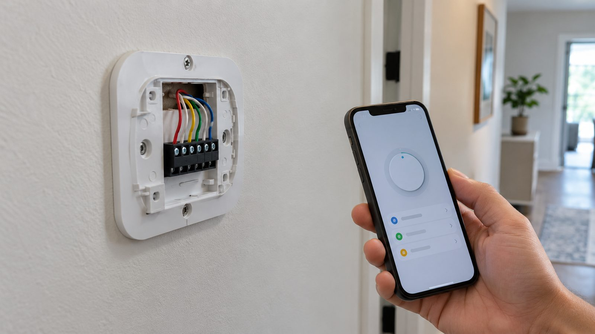
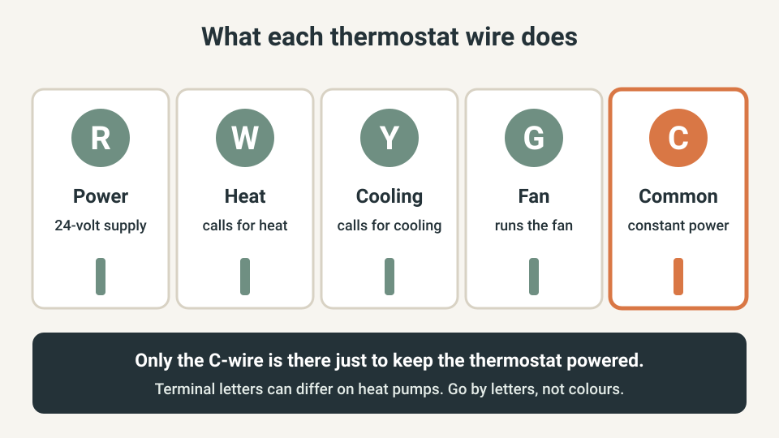
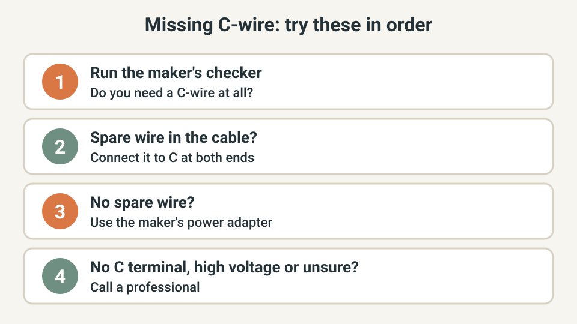
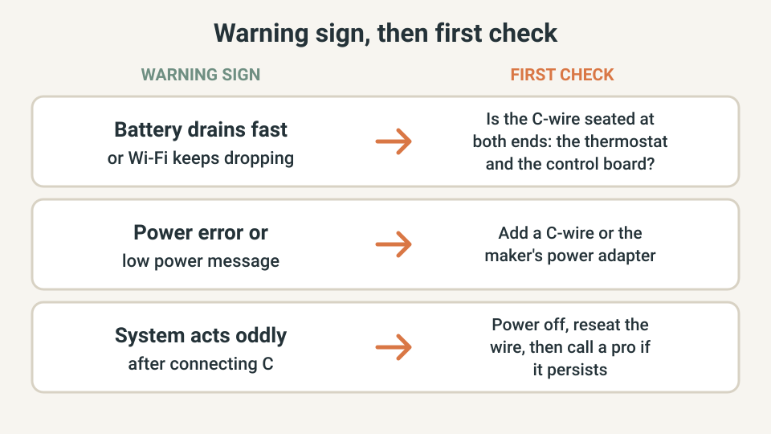

SMART HOME · THERMOSTATS
Smart Thermostat Without a C-Wire: Check First, Then Pick the Fix

A smart thermostat that loses power shows it quickly: a dim screen, dropped Wi-Fi or a draining battery. The cause is often a missing C-wire, the thin wire that supplies constant power. Many homes lack one at the thermostat, and that does not always mean new wiring.
This guide shows how to check before you buy, how to look for a spare wire, and how to choose between the maker's adapter, a new wire and a professional. It covers common 24-volt systems in North America.
The quick answer
- Run the maker's compatibility checker for your exact thermostat and system before you buy.
- Many smart thermostats work without a C-wire, but some systems need one. Heating-only, cooling-only, zoned and heat pump systems often do.
- If the thermostat cable has an unused wire, connect it as the C-wire at both ends.
- No spare wire? The maker's power adapter is usually simpler and cheaper than running a new wire.
- No C terminal on the control board, a high-voltage system or any doubt: call a professional.
- Turn the heating and cooling power off at the breaker before you touch a wire.
I am not an HVAC technician. This is a planning guide built from the thermostat makers' own documentation. Follow your maker's installation instructions and local rules, and ask a licensed professional when in doubt.
Quick plan
| Item | Detail |
|---|---|
| Time | About 20 minutes to check; roughly 30 to 60 minutes more if you connect a spare wire or fit an adapter |
| Cost | Checking is free. A maker's power adapter is often about $25 to $35 in US listings; a new wire run by a professional costs more and varies |
| Best for | Homeowners fitting a smart thermostat to an older system, or seeing power problems after fitting one |
| Goal | Steady power for the thermostat, with heating, cooling and fan working as before |
Step 1: Check before you buy (5 minutes)
Nest thermostats are designed to use very little power and often draw what they need through the heating and cooling wires, but Google says some systems need a C-wire or a power accessory. Enter your thermostat model and system type in the maker's compatibility checker first. For Nest that is g.co/nest/works, and ecobee links its checker from its Power Extender Kit page.
- Note what it says: no C-wire needed, C-wire recommended, or C-wire or adapter required.
- If your old thermostat had a C-wire connected, expect the new one to ask for it too.
- During setup, the app may run a power test and tell you if you need a C-wire or the maker's power connector.
What the C-wire does, in one picture
A thermostat cable carries a few thin wires. R brings 24-volt power from the system's transformer. W, Y and G tell the system to heat, cool or run the fan. C is the common wire: it connects to the other side of the same 24-volt supply, so the thermostat has steady power even when nothing is running.

Without a C-wire, the thermostat has to borrow power from the heating or cooling wires. That can work with a very low-power thermostat, which is why many installs run fine. It becomes a problem when the system is idle for long periods or the thermostat does more, for example Wi-Fi and a bright screen.
Step 2: Look at your wires (10 minutes)
Turn the heating and cooling system off at its breaker or switch first. Pull the old thermostat's faceplate off, then photograph the terminals and wires before you disconnect anything. Wire colours are common but not a rule, so go by the terminal letters, not the colour.
- Is a wire already on the C terminal? If so, confirm it is also connected to the C terminal on the control board in the furnace or air handler.
- Is there an unused wire? Cables often hold more wires than the thermostat uses, folded back behind the plate. Count the wires in the cable and compare with the terminals in use.
- Does the control board have a C terminal? It is usually marked C or COM. If it does not, Google says to call a professional.
- Is anything marked 120V or 240V, or are the wires thick? That is a line-voltage system, for example some baseboard heaters. Stop and ask a professional.
Step 3: Choose a fix that fits your wires

| Option | When it fits | Cost and effort |
|---|---|---|
| Use a spare wire | The cable has an unused wire and the control board has a C terminal | Free. Connect it to C at both ends with the power off |
| The maker's power adapter | No spare wire, and your thermostat's maker sells one | Often about $25 to $35. ecobee includes its kit with most models; check your box |
| Run a new cable | No spare wire and an adapter does not suit your system | A professional job. Google notes it can be expensive |
Adapters are made for specific thermostats. ecobee says its kit works only with ecobee thermostats, and Google warns that some third-party adapters can cause problems or damage a Nest thermostat even when they claim to be compatible. They are also designed for common 24-volt systems, so check the maker's compatibility tool before buying for a high-voltage or millivolt system.
Step 4: Watch for warning signs after install (10 minutes)
Turn the power back on, run the maker's power test in the app, then run heat, cooling and the fan once each. Keep an eye on the thermostat for a day or two.

- A battery that drains quickly, or Wi-Fi that keeps disconnecting, are the symptoms Google gives for a thermostat that needs a C-wire or its power connector.
- Power-related codes or messages, such as a low power message in the app, mean the thermostat is not getting steady power. Google lists E1, E297, N260 and N261 for Nest.
- If the app says the C-wire is not getting power, turn the power off, remove the display, make sure the wire is fully inserted, check the C terminal on the control board, then restore the power. If it still fails, call a professional.
When to call a professional
- The control board has no C terminal.
- The thermostat or wires are marked 120V or 240V, or the system is millivolt.
- You have a heat pump or zoned system and the terminal labels do not match the maker's guide.
- You smell burning, a breaker trips or a fuse on the control board blows.
- A new cable has to be run through the wall.
- You are not comfortable working with the power off, or the wiring looks different from the guide.
US, UK and EU: the wiring differs
This guide is about low-voltage 24-volt heating and cooling systems, which are common in North America. UK and EU heating controls often use different wiring, such as mains-voltage wiring centres or wireless receivers, where the C-wire idea does not apply. Use the maker's installation guide for your country, and a qualified installer where the rules require one.
What not to buy yet
- A third-party C-wire adapter, before you read the thermostat maker's compatibility notes.
- A more expensive thermostat just because a checker flagged a missing C-wire. The maker's own adapter may solve it.
- A new cable run, before you have checked for a spare wire in the cable you already have.
- Any smart thermostat, before you have run its checker with your exact system type.
Quick win (10 minutes)
Run the maker's compatibility checker for the thermostat you plan to buy. Then, with the heating and cooling power off, take one clear photo of your current thermostat's terminals and one of the control board. Those two photos answer most of what an installer or support agent will ask.
Common mistakes
- Working on the wires with the power still on.
- Going by wire colour instead of the terminal letters.
- Connecting the spare wire at the thermostat but not at the control board.
- Wires that are not pushed fully into the terminals.
- Fitting an adapter made for a different brand of thermostat.
- Ignoring a small power message and hoping it goes away.
Frequently asked questions
Do all smart thermostats need a C-wire?
No. Google says its Nest thermostats are designed to work without one in many homes, but some systems, including heating-only, cooling-only, zoned and heat pump systems, need a C-wire or a compatible power accessory. Other brands differ, so check the maker's compatibility tool for your exact model and system.
Can I use any spare wire as the C-wire?
You can use an unused wire in the same thermostat cable. It has to be connected to the C terminal at the thermostat and to the C terminal on the control board, so check both ends. Wire colours are common but not a rule, so label the wire and go by the terminal letters.
Is a power adapter as good as a real C-wire?
Makers sell adapters as a simpler and usually cheaper alternative to running a new wire, and they are designed for their own thermostats. A real C-wire is the most direct fix, but an adapter from the thermostat's maker is a reasonable choice when there is no spare wire.
Can I install this myself?
Google says you may be able to fix C-wire issues yourself if you are comfortable troubleshooting your system and take the necessary precautions, starting with turning the power off. If anything looks different from the photos in the maker's guide, or you do not see a C terminal on the control board, call a professional.
What if the system stopped working after I connected the C-wire?
Turn the heating and cooling power off at the breaker. Check that the wire is fully inserted at the thermostat and that it is connected to the C terminal on the control board, then turn the power back on. If the problem remains, call a professional.
Keep going
- Test what still works when your Wi-Fi goes down
- Smart home privacy check: lock down your devices in 10 minutes
- Smart lighting without the headaches